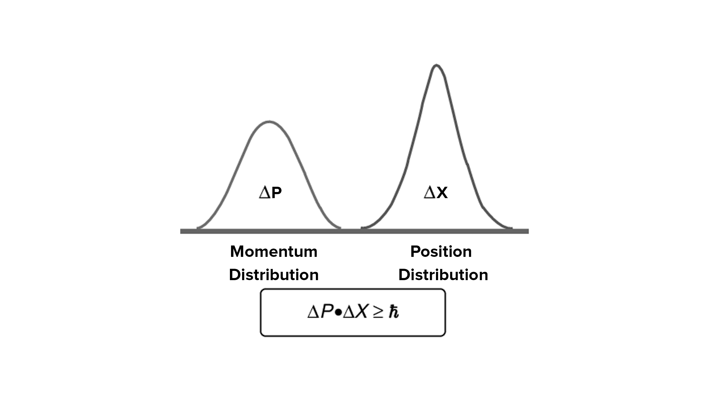

Uncertainty Principle
Imagine trying to simultaneously measure the position and speed of a ball thrown in the air. The more precisely you know its position at a given time, the less precisely you can know its speed, and vice versa. This is an illustration of Heisenberg's uncertainty principle, a fundamental concept of quantum mechanics that imposes a fundamental limit on the precision with which certain physical properties of a particle can be known simultaneously.
Mathematically, the uncertainty principle states that the product of the uncertainty in the position (Δx) and the uncertainty in the momentum (Δp) of a particle can never be less than a constant value , h/4π, where h is Planck's constant. In other words, the more precisely we seek to know the position of a particle, the less precisely we can know its momentum, and vice versa.
This principle is not a limitation due to our measuring instruments, but a fundamental property of nature at the quantum level. It arises from wave-particle duality and the probabilistic nature of quantum mechanics. Quantum particles do not behave like perfectly localized billiard balls, but rather like “wave packets” of probability. The position and momentum of a particle are not defined values, but rather probability distributions.
The uncertainty principle has profound implications in many areas of physics and chemistry. It is crucial for understanding the structure of atoms, properties of materials, chemical reactions and even biological processes. It also plays an important role in the interpretation of quantum mechanics and the development of cutting-edge technologies such as lasers, transistors and quantum computers.
Far from being an obstacle to knowledge, the uncertainty principle invites us to accept the imprecision inherent in the quantum world and to adopt a new perspective on the nature of reality on a microscopic scale. It opens the way to a deeper understanding of the world around us and to revolutionary applications that shape our future.